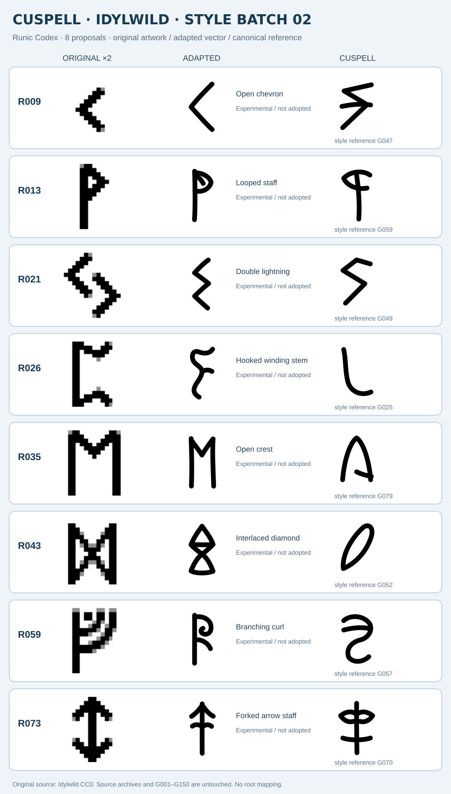
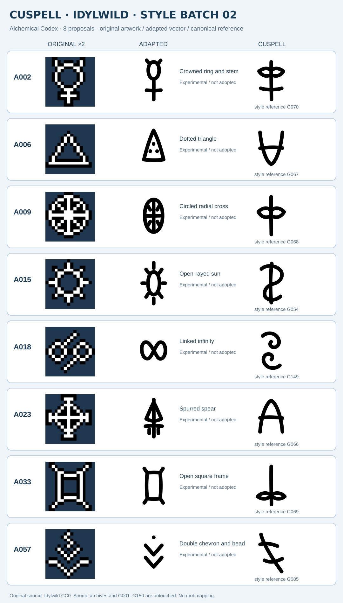

Each row shows actual Idylwild source pixels, the new editable Cuspell-style adaptation, and a current Cuspell reference. The rightmost symbol is shown for style context only, not a proposed replacement or meaning assignment. Batch 01 remains saved separately.
Runic Codex

Alchemical Codex

All original assets are preserved, all canonical 150 glyphs unchanged. Source: Idylwild (CC0).